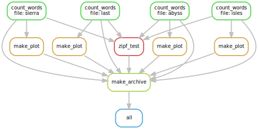

Final notes
Now that we know how to write and scale a pipeline, here are some tips and tricks for making the process go more smoothly.
“snakemake -n” is your friend
Whenever you edit your Snakefile, run snakemake -n immediately afterwards.
This will check for errors and make sure that the pipeline is able to run.
The most common source of errors is a mismatch in filenames
(Snakemake doesn’t know how to produce a particular output file) -
snakemake -n will catch this as long as the troublesome output files haven’t already been made.
Token files
Often, a rule does not generate a unique output, and merely modifies a file.
In these cases it is often worthwhile to create a placeholder, or “token file” as output.
A token file is simply an empty file that you can create with the touch command
(touch some_file.txt creates an empty file called some_file.txt).
An example rule using this technique is shown below:
rule token_example:
input: 'some_file.txt'
output: 'some_file.tkn' # marks some_file.txt as modified
shell:
'''
some_command --do-things {input} &&
touch {output}
'''
Directory locks
Only one instance of Snakemake can run in a directory at a time.
If a Snakemake run fails without unlocking the directory
(if you killed the process, for instance), you can run
snakemake --unlock to unlock it.
Python as a fallback
Remember, you can use Python imports and functions anywhere in a Snakefile.
If something seems a little tricky to implement - Python can do it.
The os, shutil, and subprocess packages are useful tools for using Python
to execute command line actions.
In particular, os.system('some command') will run a command on the command-line
and block until execution is complete.
Creating a workflow diagram
Assuming graphviz is installed (conda install graphviz),
you can create a diagram of your workflow with the command:
snakemake --dag | dot -Tsvg > dag.svg.
This creates a plot of your “directed acyclic graph”
(a plot of all of the rules Snakemake thinks it needs to complete),
which you can view using any picture viewing program.
In fact this was the tool used to create all of the diagrams in this lesson:
snakemake --dag | dot -Tsvg > dag.svg
eog dag.svg # eog is an image viewer installed on many linux systems

Rules that have yet to be completed are indicated with solid outlines.
Already completed tasks will be indicated with dashed outlines.
In this case, I ran snakemake clean, just before creating the diagram -
no rules have been run yet.
Viewing the GUI
Snakemake has an experimental web browser GUI. I personally haven’t used it for anything, but it’s cool to know it’s there and can be used to view your workflow on the fly.
snakemake --gui
Where to go for documentation / help
The Snakemake documentation is located at snakemake.readthedocs.io